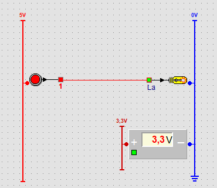
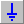

Normaal hangt de voeding van alle onderdelen onzichtbaar op de achtergrond (zie
Waar zijn de plus en de min?). Wil je de plus en de min toch zien,
zet dan voedingsrails op het paneel: een rode + rail voor de invoer en een blauwe
− rail (de massa) voor de uitvoer. Met de voltmeter meet je de spanning.

Een drukknop op de + rail van 5 V, een lamp op de − rail (massa), en een
voltmeter tussen een + rail van 3,3 V en de massa.
Voedingsrails plaatsen
Onderaan de onderdelenbalk staan twee halve knoppen naast elkaar:
Knop
Naam
Wat is het?
+ rail (voeding)
Rode rail. Bovenaan staat de spanning, bijvoorbeeld 5V.

− rail (massa)
Blauwe rail met bovenaan 0V en onderaan het massasymbool.
Klik op de knop van de rail die je wil plaatsen.
Klik op het paneel waar de rail moet komen.
Je mag zoveel + en − rails plaatsen als je wil, bijvoorbeeld een aparte rail per deel van de schakeling.
Wat verandert er als er rails op het paneel staan?
Zolang er geen enkele rail op het paneel staat, werkt alles zoals vroeger. Staat er
minstens één rail, dan moeten invoer en uitvoer ingeplugd zijn:
Invoer (drukknop, schakelaar, dipschakelaar, impulsgenerator, licht- en
warmtesensor) zit rechts van een + rail.
Uitvoer (lamp, relais, zoemer en display) zit links van een
− rail.
In plaats van in te pluggen kan je een onderdeel ook met een draad op een rail aansluiten: zie
Aansluiten met een voedingsdraad.
Een ingeplugd onderdeel krijgt een dunne stekker met een bolletje in de kleur van de rail. Een onderdeel
dat niet ingeplugd is, krijgt een grijs bolletje en werkt niet: invoer geeft geen signaal, uitvoer
blijft uit en een display blijft donker.
De verwerking (poorten, teller en geheugen) plug je niet in: die krijgt
haar voeding nog altijd onzichtbaar.
Inpluggen
Sleep een onderdeel tegen de rail. Komt het binnen 12 pixels, dan springt het er vanzelf op.
Ook als je een nieuw onderdeel uit de balk plaatst, of een groep onderdelen sleept, springt het op een rail
in de buurt.
Het midden van het onderdeel moet naast het getekende stuk rail liggen, niet erboven of eronder.
Maak de rail zo nodig langer.
Met de pijltjestoetsen verschuif je per pixel; zo kan je een onderdeel ook weer lostrekken.
Aansluiten met een voedingsdraad
In plaats van een onderdeel in te pluggen, kan je het ook met een draad op een rail aansluiten, zoals in een
echte schakeling. Het onderdeel mag dan overal op het paneel staan.
Klik op Verbinding.
Klik op de lijn van de rail, op de hoogte waar de draad moet beginnen. Er verschijnt een draad.
Sleep het einde van de draad naar het grijze bolletje van het onderdeel: links bij invoer (vanaf een
+ rail), rechts bij uitvoer en bij de − kant van de voltmeter (vanaf een − rail). Vanaf een − rail verschijnt de draad links van de rail. Binnen 12 pixels springt het einde vanzelf op het bolletje.
Het bolletje krijgt de kleur van de rail en het onderdeel werkt. Een draad van een + rail wordt tijdens de
simulatie rood als er genoeg spanning op staat; een draad naar een − rail is blauw.
Versleep je de rail, dan blijft het begin van de draad op de rail. Versleep je het onderdeel, dan gaat het
einde van de draad mee.
Een draad van een + rail naar een ingang (van een poort, de voltmeter of R1 van het schakelrelais) werkt als
een gewone draad met de spanning van de rail.
Een voedingsdraad verwijder je zoals elke andere draad.
Rails verplaatsen en verlengen
Verplaatsen: sleep in het midden van de rail. Alle onderdelen die erop ingeplugd zijn, schuiven
mee, met hun draden.
Langer of korter: sleep een uiteinde (de muisaanwijzer wordt ↕). Bij de − rail is het
massasymbool het onderste uiteinde.
Rechtsklikmenu:Spanning (alleen bij een + rail), Vergrendel / Ontgrendel en
Selecteer object om de rail te verwijderen.
Rechtsklik op een + rail en kies Spanning: 0, 1, 2, 3, 3,3, 4 of 5 V. Net als bij echte
logische schakelingen werkt een ingang pas vanaf ongeveer 2 V.
Spanning
Rail
Invoer op deze rail
0 V
grijs
geeft geen signaal
1 V
donkerrood
geeft geen signaal: te weinig spanning
2 V tot 5 V
rood, feller naarmate de spanning hoger is
werkt
Voltmeter
De voltmeter staat in de onderdelenbalk. Wil je hem verbergen, zet dan bij
Instellingen, tabblad SchakelElementen,
Voltmeter op False.
De voltmeter meet de spanning tegenover de massa (0 V) en toont ze met één decimaal,
in het rood zodra er spanning is.
+ (links): sluit er een draad op aan, of plug de meter rechts van een + rail in. Dan toont hij
de spanning van die rail.
− (rechts): mag open blijven, of plug de meter links van een − rail in, of leg een draad van een − rail naar het bolletje rechts (parallel aansluiten). De meting
blijft dezelfde; het maakt de schakeling alleen duidelijker.
Een draad brengt de spanning van zijn bron mee:
Bron
Spanning op de draad
invoer op een + rail, aan
de spanning van die rail
draad die op een + rail begint
de spanning van die rail
invoer zonder rails op het paneel, aan
5 V
poort, teller of geheugen, uitgang aan
5 V
alles wat uit staat
0 V
Tip: zet een drukknop op een + rail van 1 V en verbind hem met een
lamp en met de voltmeter. Druk je de knop in, dan toont de meter 1,0 V, maar de lamp blijft uit:
de spanning is te laag voor een logische ingang.
Opslaan en instellingen
Rails (met hun plaats, lengte en spanning) en voltmeters worden in het paneelbestand (.lpl)
bewaard. Een oudere versie van Logic slaat de rails over.
Wil je de railknoppen niet in de onderdelenbalk, zet dan bij
InstellingenVoedingsrails (+ en -) op False.
 Verbinding.
Verbinding. Voltmeter
Voltmeter